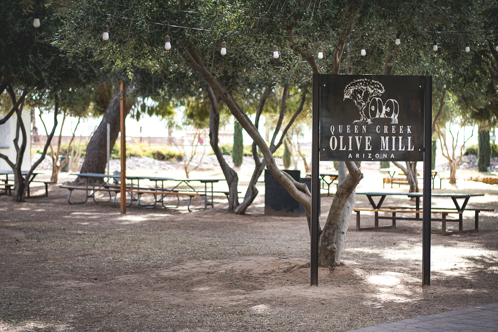
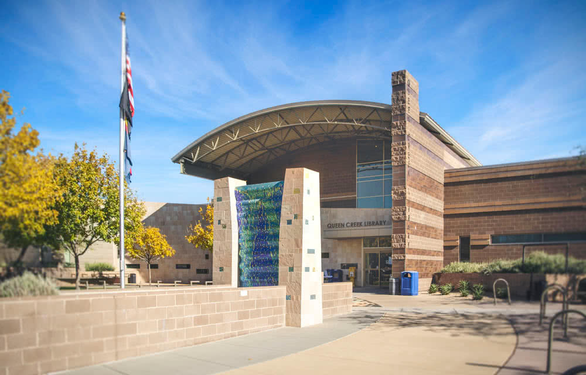
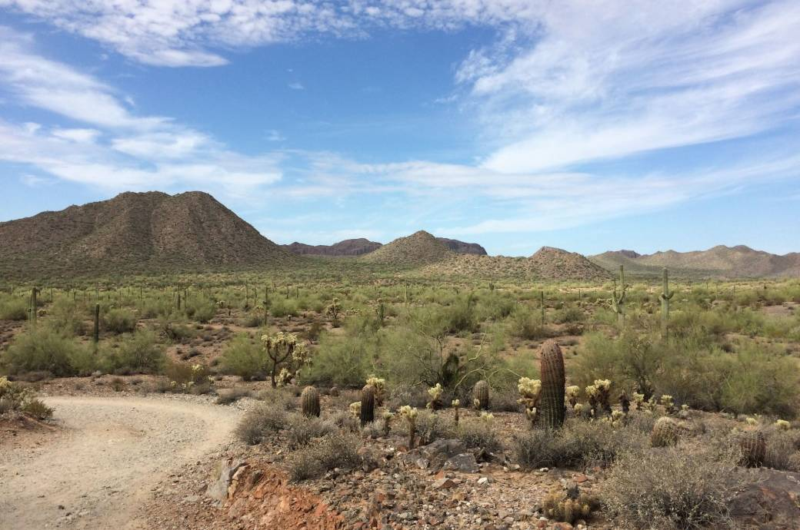
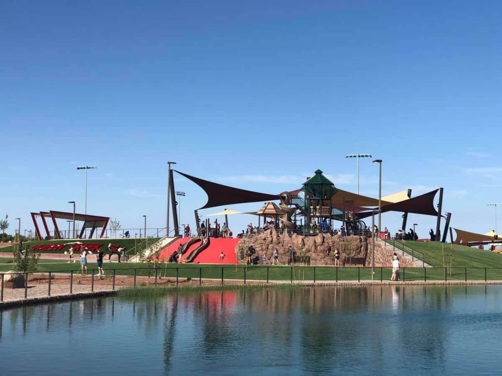
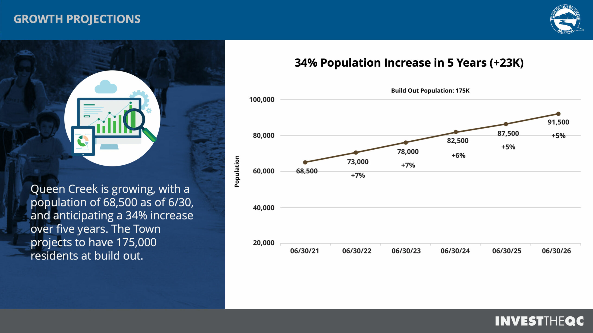
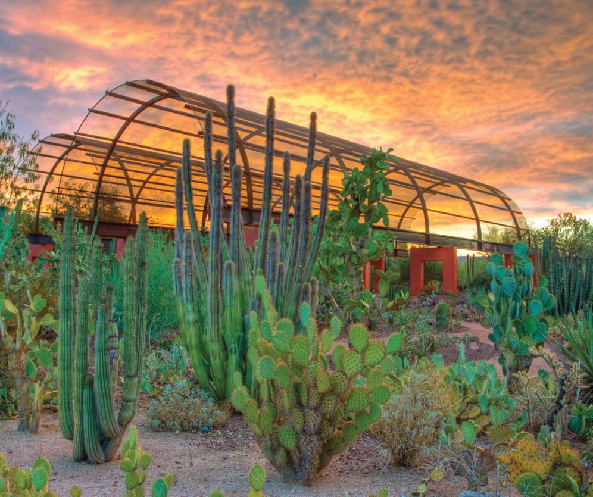
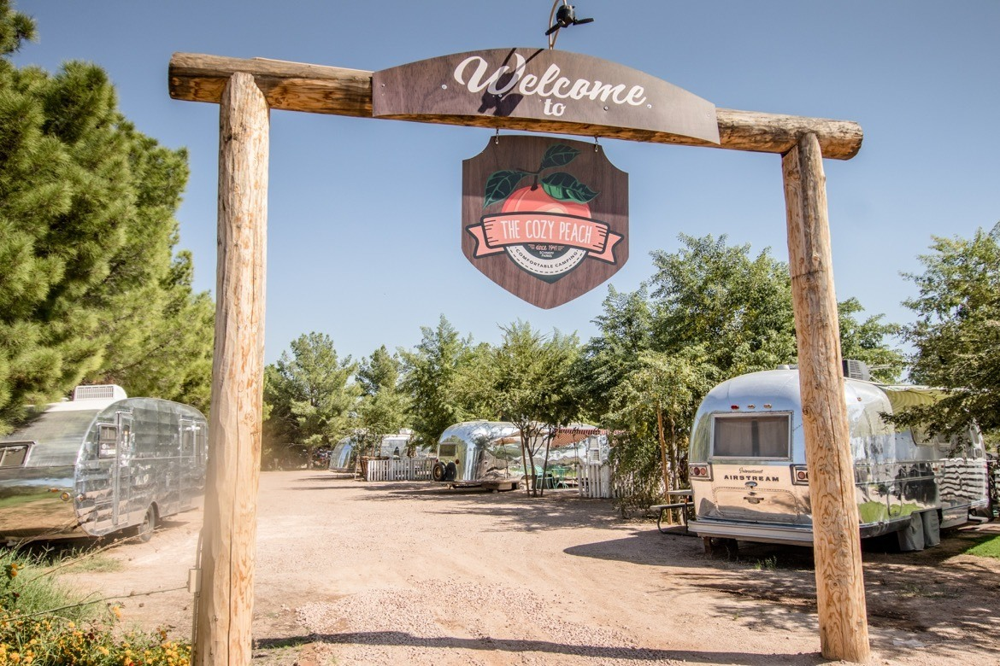
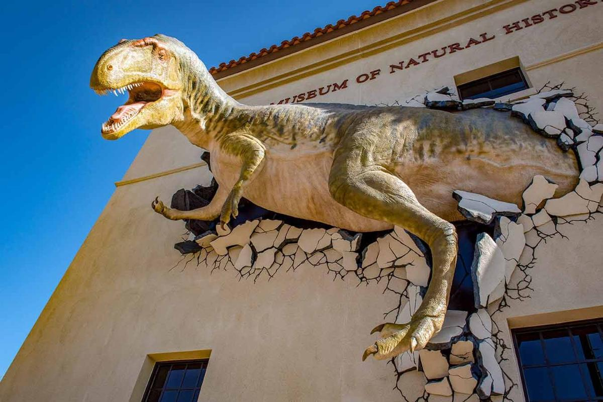

The olive mill has a great tour as well as a fancy restaurant

The library is a great place to study and borrow books for free

The SanTan trail is a great hike with great views.

The parks have great playgrounds and a lot of space to run around.

Queen Creek is growing fast! This is a graph of its projected population

The botanical garden has lots of pretty plants

The peach orchard lets you pick peaches and right off the tree and take them home. Delicious!

The natural history museum has a lot of great and fun info!